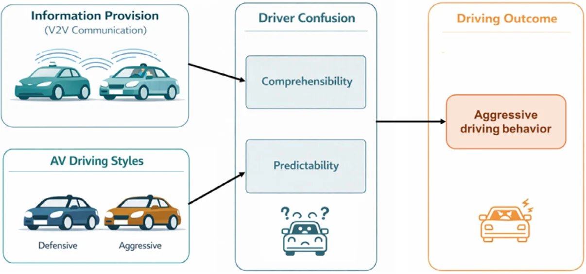

Mitigating driver confusion and aggression in mixed traffic: Effects of V2V communication and driving style
Accident Analysis & Prevention, 2026
Abstract
Human-driven vehicle operators may misinterpret automated vehicles (AVs) whose defensive behavior differs from their expectations. This study examined whether vehicle-to-vehicle (V2V) communication and AV driving style affect driver confusion and aggressive responses. Forty-eight participants completed a driving-simulator experiment comparing V2V-on and V2V-off conditions while encountering defensive and assertive AVs. V2V communication improved the alignment of drivers' decisions with AV intentions and reduced reported confusion and braking frequency. More assertive, rule-compliant AV behavior was also associated with less confusion. The findings support communicating AV intentions and calibrating negotiation behavior to improve mixed-traffic interactions.
Key finding: V2V cues improved decision alignment and reduced confusion and braking, while more assertive, rule-compliant AV behavior helped drivers interpret AV intent.
STISIM · V2V interface · Experimental design · Mixed-effects models